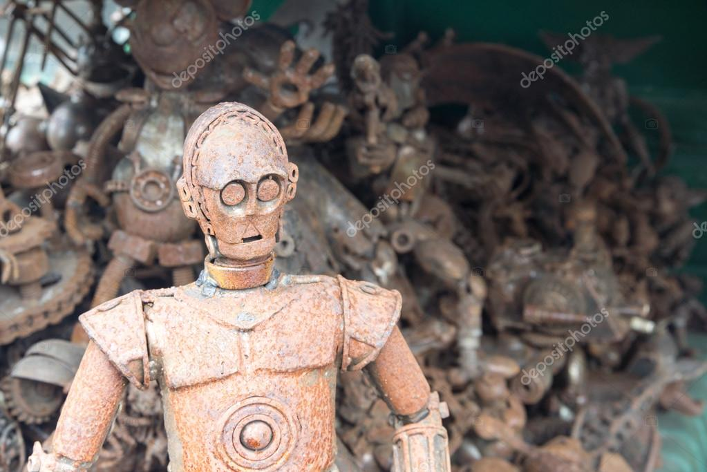

Com apenas 10 anos, Laura Cirno de Castro Guimarães já era apaixonada por tecnologia. Em sua
garagem, usando sucata e peças de brinquedos quebrados, criou seu primeiro robô, chamado Nova-
01. Ele mal conseguia andar, mas para Laura era um avanço incrível. Sua mente já vislumbrava um
futuro onde robôs ajudariam a humanidade a explorar o espaço.
Aos 16 anos, Laura conquistou um prêmio nacional ao apresentar um robô capaz de ajudar
agricultores a monitorar plantações de forma autônoma. Isso lhe rendeu uma bolsa de estudos para
um curso de robótica avançada. Durante os estudos, ela começou a desenvolver robôs voltados para
missões espaciais, uma área que combinava perfeitamente sua paixão pela tecnologia e pelo
cosmos.
Aos 18 anos, Laura fundou a NovaTech, uma startup dedicada ao desenvolvimento de robôs
inovadores. Inicialmente, a empresa produzia robôs industriais, mas Laura nunca abandonou seu
objetivo principal: conquistar o espaço. O lucro das primeiras vendas foi reinvestido em pesquisas de
robôs projetados para ambientes extremos.
Dois anos após sua fundação, a NovaTech enviou seu primeiro robô para uma missão na órbita
terrestre. O Nova Explorer realizou reparos em satélites e retornou com dados importantes sobre a
viabilidade de robôs em operações espaciais. Esse sucesso atraiu investidores e garantiu contratos
com agências espaciais.
Aos 22 anos, Laura lidera a NovaTech Galactic, agora uma das principais empresas de robótica e
exploração espacial do mundo. O robô mais recente, o Nova Pioneer, está prestes a ser enviado a
Marte com a missão de montar bases habitáveis para futuras missões tripuladas. Com tecnologia de
ponta e uma visão ambiciosa, Laura transformou a NovaTech em uma pioneira na colonização de
novos mundos.